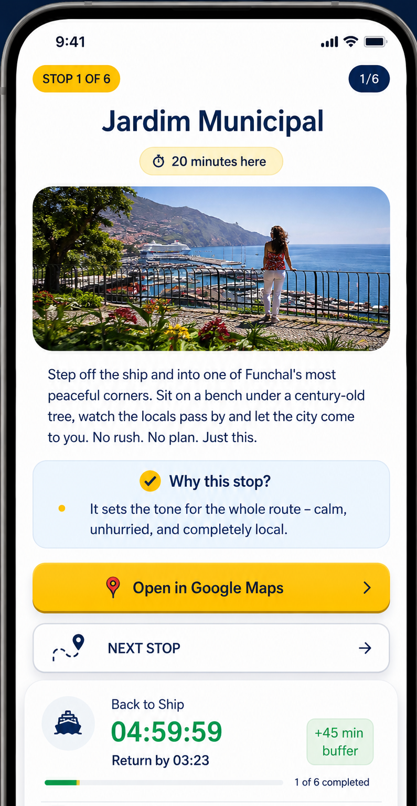
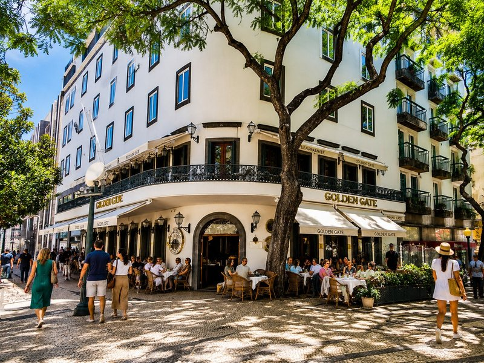

Simple. Flexible. No worries.
- 1Choose the route
Select the ideal route for your stop.
- 2Go at your pace
Browser-based navigation with points of interest.
- 3Back on time
Countdown timer to return to the ship.
Passenger proof
Built for short cruise stops
Short, practical feedback focused on what matters most: seeing Funchal and returning calmly.
“We got back to the ship without stress and saw much more than on a tour.”
“The Back to Ship timer made the walk feel relaxed, not risky.”
“Opened it on the phone, followed the stops and still had time for coffee.”
Product preview
See exactly what you buy
A route map, simple stop list, browser-based guidance and a Back to Ship timer designed for cruise passengers.

Everything you need during your stop
- Stop-by-stop guidance
- Google Maps navigation
- Suggested time at every stop
- Back-to-Ship countdown timer
- No app installation required
Choose your Funchal route now. Use it on your phone when you arrive.
CruiseStop is designed for both moments: plan and buy from your computer, then open the same route on your phone in Funchal. No app installation and no separate account needed.
 Scan to open CruiseStop
cruisestop.eu
Scan to open CruiseStop
cruisestop.eu
Choose the right route for your stop
Three simple ways to explore Funchal without joining a group tour.

Most relaxedRelaxed FunchalHistoric cafés, gardens and local flavours Best foodTaste MadeiraLocal flavours and characterful streetsMonday–Saturday recommended
Best foodTaste MadeiraLocal flavours and characterful streetsMonday–Saturday recommendedSome food stops may close Sundays & public holidays
Pay once. Open on your phone. Follow the route during your cruise stop.
Questions
Simple before you buy
Do I need to install an app?
No. Open CruiseStop on your phone and follow the route in the browser.
Is it made for cruise passengers?
Yes. Routes start near the Funchal cruise port and are planned for limited shore time.
Do I need internet access?
An internet connection is recommended for the best experience, especially for live Google Maps navigation and route updates. No app installation is required.
What if I do not return on time?
The promise is simple: back to the ship on time or your money back.
Self-guided Funchal routes for cruise passengers
Explore Funchal independently during a short cruise stop, with a clear route, practical guidance and time kept under control.
Choose Relaxed Funchal, Taste Madeira or Panoramic Funchal — each route is designed to be easy to follow and to finish near the cruise port.